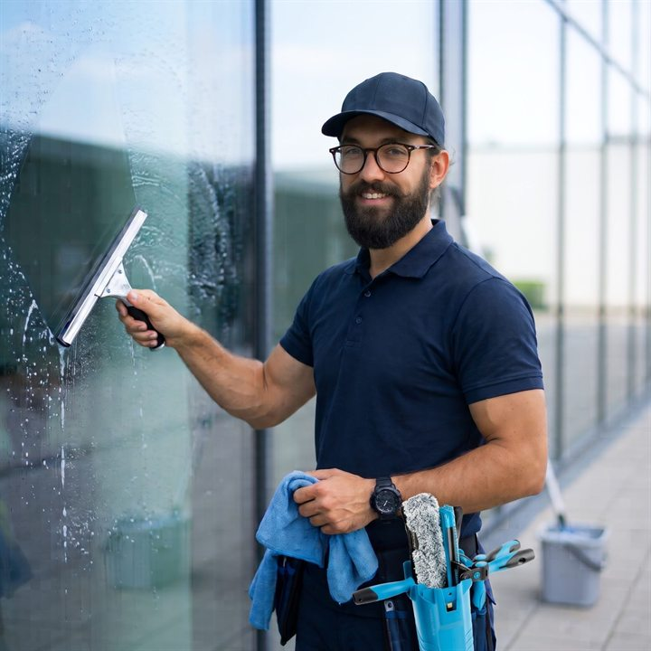

Glas innen & außen
Streifenfreie Scheiben auf beiden Seiten – für klare Durchsicht.
Fensterreinigung · Köln linksrheinisch
Ich putze Ihre Fenster streifenfrei – innen und außen, samt Rahmen. Persönlich, zuverlässig und ganz unkompliziert per WhatsApp angefragt.
Leistung
Ich konzentriere mich auf eine Sache und mache sie richtig: saubere Fenster. Für Wohnungen, Häuser und kleine Büros im linksrheinischen Köln.
Streifenfreie Scheiben auf beiden Seiten – für klare Durchsicht.
Rahmen, Dichtungen und Falze werden gleich mit gereinigt.
Werden für Sie selbstverständlich mitgeputzt.
Auch große Glastüren und bodentiefe Fenster werden wieder klar.
Einmalig oder regelmäßig: zum Frühjahrsputz, vor dem Besuch, nach dem Umzug – oder im festen Rhythmus, ganz wie Sie möchten.
So läuft’s abAblauf
Von der Anfrage bis zur klaren Sicht – persönlich und unkompliziert, ohne Papierkram.
Schicken Sie mir ein paar Fotos Ihrer Fenster und sagen Sie mir, in welchem Stadtteil Sie wohnen.
Anhand der Fotos nenne ich Ihnen einen fairen Festpreis – kostenlos und unverbindlich.
Wir stimmen einen Termin ab, ich komme vorbei – und Sie genießen den Durchblick.
Einsatzgebiet
Ich wohne in Lindenthal und bin mit kurzen Wegen in allen linksrheinischen Stadtbezirken für Sie da.
Zum Beispiel in Sülz, Klettenberg, Braunsfeld, Junkersdorf, Müngersdorf, Neuehrenfeld, Bickendorf, im Belgischen Viertel, im Agnesviertel, in der Südstadt, in Bayenthal, Marienburg, Zollstock und Riehl. Weitere Gebiete gerne auf Anfrage.

Ihr FensterputzerÜber mich
Ich bin gelernter Fitness-Trainer, studiere Osteopathie in Köln und wohne mitten in Lindenthal. Mit Fensterblitz Wiesner sorge ich in meiner Nachbarschaft für streifenfreie Fenster – mit Profi-Ausrüstung, Zuverlässigkeit und einem Blick fürs Detail.
Bei mir haben Sie einen festen Ansprechpartner: Ich komme selbst vorbei, und Sie erreichen mich direkt per WhatsApp – ohne Warteschleife.
– Joschka Wiesner
FAQ
Das hängt von Anzahl, Größe und Erreichbarkeit der Fenster ab. Schicken Sie mir einfach ein paar Fotos per WhatsApp – Sie bekommen kostenlos und unverbindlich einen Festpreis.
Das feuchte Abwischen der Rahmen und Fensterbänke gehört bei mir standardmäßig dazu. Falls eine besonders gründliche Reinigung der Innenfalze oder stark verschmutzter Rahmen gewünscht ist, berücksichtige ich das direkt vorab in Ihrem Festpreis.
Ich reinige Fenster, die vom Boden, vom Balkon oder mit einer Haushaltsleiter sicher erreichbar sind. Bei besonderen Fällen schicken Sie mir einfach Fotos – ich sage Ihnen ehrlich, ob ich es übernehmen kann.
In der Regel finden wir innerhalb von 1 bis 2 Wochen einen passenden Termin – je nach Auslastung manchmal auch kurzfristiger. Sobald Sie mir Fotos Ihrer Fenster geschickt haben, mache ich Ihnen direkt 2 bis 3 konkrete Terminvorschläge. Schreiben Sie mir vorab gerne einfach kurz, ob es bei Ihnen generell eher vormittags, nachmittags oder an bestimmten Wochentagen gut passt.
Ja, sehr gerne – ob einmalig oder im festen Rhythmus (z. B. vierteljährlich für Wohnungen oder monatlich für Schaufenster). Alles läuft flexibel und ohne feste Vertragsbindung.
Die Bezahlung erfolgt direkt im Anschluss an die Reinigung in bar gegen Quittung. Falls gerade kein Bargeld zur Hand ist, können Sie alternativ auch bequem per GiroCode (Banking-App) oder PayPal zahlen.
Selbstverständlich stelle ich Ihnen gerne eine ordentliche Rechnung aus. Privatkunden können die Arbeitskosten als haushaltsnahe Dienstleistung von der Steuer absetzen – dafür muss die Zahlung lediglich unbar (per GiroCode oder PayPal) erfolgen.
Ja, selbstverständlich besteht für meine Tätigkeit ein entsprechender Haftpflichtschutz – sodass Sie im unwahrscheinlichen Fall eines Missgeschicks abgesichert sind.
Für die Innenseiten brauche ich Zugang zur Wohnung bzw. zum Haus. Wie wir das am besten machen, stimmen wir vorher gemeinsam ab.
Es hilft sehr, wenn die Fensterbänke freigeräumt und die Fenster gut zugänglich sind. So kann ich direkt starten und sauber arbeiten. Ansonsten brauche ich nur Zugang zu einem Wasserhahn – Reinigungsmittel, Abzieher und Tücher bringe ich mit.
Leichter Regen ist kein Problem – auf frisch gereinigtem Glas perlt Wasser ab, ohne Flecken zu hinterlassen. Bei starkem Regen oder Sturm verschieben wir den Termin einfach unkompliziert.
Anfrage
Ihr Stadtteil und ein paar Fotos reichen mir für einen Festpreis. Per WhatsApp geht’s am schnellsten – per Formular oder E-Mail genauso.
Schicken Sie mir Ihren Stadtteil und ein paar Bilder Ihrer Fenster. Sie bekommen schnell einen Festpreis von mir.
WhatsApp öffnenAm hilfreichsten: je Fensterseite ein Foto und dazu eine Nahaufnahme.
Ein paar Angaben genügen – ich antworte Ihnen mit einem Festpreis.